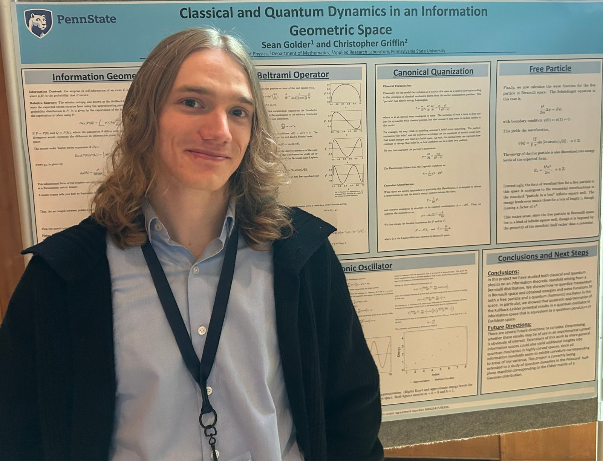

We study elementary classical and quantum dynamics in an information geometric space corresponding to a Bernoulli random variable, extending work by Goehle and Griffin [Chaos, Solitons & Fractals, 188, 115535, (2024)], who study the information theoretic analogue of the spring-mass system. Information geometric constructions are useful in both statistical physics and geometric quantum mechanics, and they play a role in areas of biophysics. In this letter, we derive the spectrum for the Laplace-Beltrami operator in Bernoulli space and find solutions to the wave and heat equations. We then show one way to quantize momentum in Bernoulli space and identify appropriate boundary conditions and domains that ensure self-adjointness. We then obtain energies and wavefunctions for a free particle. Unlike the Euclidean space, Bernoulli space has at least two natural square distances, derived from the geodesic distance and the information theoretic Kullback-Leibler divergence. We show that quadratic approximation of the corresponding Kullback-Leibler potential used by Goehle and Griffin results in a quantum oscillator in information space that is equivalent to a quantum pendulum in Euclidean space. We use this to construct lower bounds on the energy levels of both the Kullback-Leibler and geodesic potentials.
Research
I work in mathematical physics, using geometric analysis and spectral theory to study quantum mechanics on curved spaces. My current research concerns quantum dynamics on statistical manifolds.
Preprints and papers under review
Works in progress
We construct the Laplace-Beltrami operator on the information geometric manifold of the univariate Gaussian distribution, which is equivalent to the Poincaré half-plane, and find its spectrum in channel and half-channel geometries, giving the wave functions of semi-free quantum particles on the space. We also develop a quantization of momentum and the Hamiltonian that applies to Riemannian manifolds in general. Using a second-order approximation of the Kullback-Leibler divergence, we formulate a quantum harmonic oscillator on the space and approximate its spectrum perturbatively in the spring constant.
Talks and posters

- “Classical and quantum dynamics in an information theoretic space.” Quantum Hub Poster Competition, Institute for Computational and Data Sciences, Penn State. April 2026
- “Classical and quantum dynamics in an information theoretic space.” Penn State Undergraduate Exhibition. April 2026
- “Entropy in information geometry.” Penn State Math Club. December 2025
- “Payload for Ultrahigh Energy Observations (PUEO) Project.” Penn State Undergraduate Exhibition. April 2025
- “How do wealth and institutional choice influence democratic stability?” Penn State Undergraduate Exhibition. April 2024
Earlier research
Before turning to mathematical physics, I worked in Stephanie Wissel's Cosmic Neutrinos Lab, designing and assembling ground calibration equipment for NASA's Payload for Ultrahigh Energy Observations (PUEO) project and writing Python code to verify pulser function. I have also done quantitative work in political science, including a model of democratic stability using global data from 1950 to 2020.